1.1 Estructura física d'un disc
1.2 Estructura lògica d'un disc
1.3 Estructura de la informació
1.4 Sistemes de fitxers
1.5 Fragmentació interna o externa
1.6 Tipus de formateig
Pas 0. Preparar-ho tot
0.1 Instal·lar photorec
sudo apt install testdisk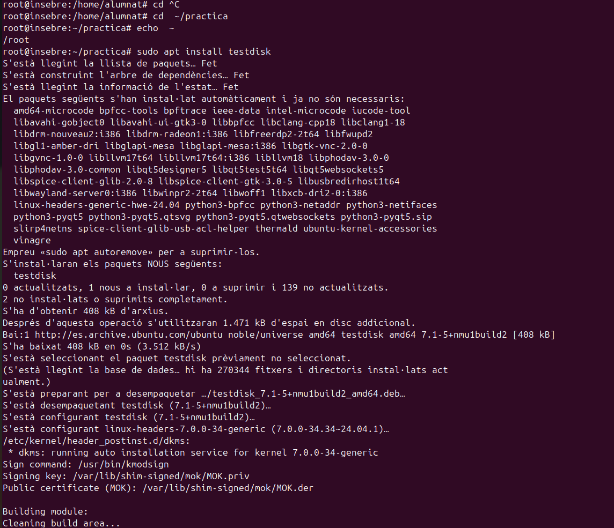
which photorec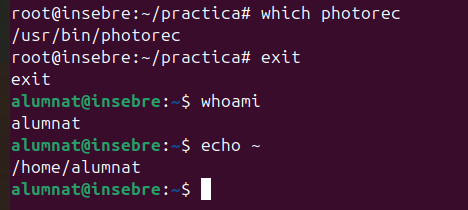
Resultat esperat: /usr/bin/photorec
0.2 Crear la carpeta de la pràctica
mkdir -p ~/practica
cd ~/practica
pwd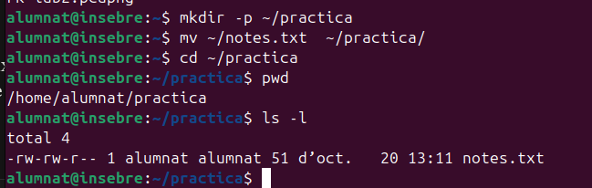
Resultat esperat: /home/alumnat/practica
0.3 Posar-hi els fitxers de prova
echo "El meu secret és que m'encanta la pizza amb pinya" > notes.txt
ls -l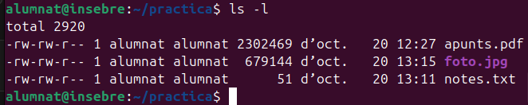
Part 1. Crear el disc virtual
1.1 Crear el fitxer
dd if=/dev/zero of=disc.img bs=1M count=200 status=progress1.2 Comprovar que existeix
ls -lh disc.img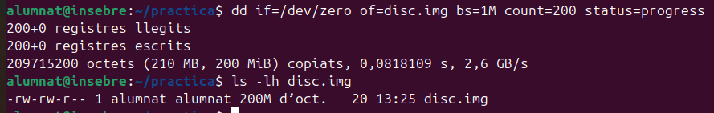
Part 2. Formatar el disc i desar-hi fitxers
2.1 Donar format al disc
mkfs.ext4 disc.img2.2 Muntar el disc
sudo mkdir -p /mnt/prova
sudo mount -o loop disc.img /mnt/prova2.3 Copiar-hi els fitxers
sudo cp foto.jpg apunts.pdf notes.txt /mnt/prova/
ls -l /mnt/prova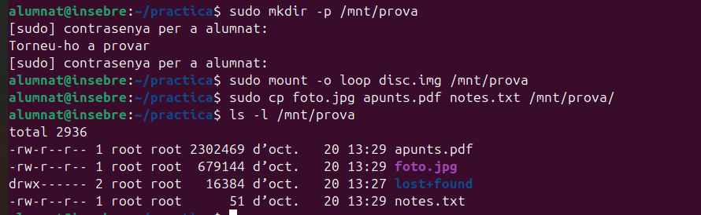
2.4 Desar els hashes dels originals
sha256sum foto.jpg apunts.pdf notes.txt > originals.sha
cat originals.sha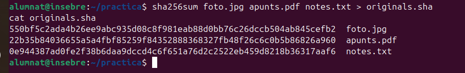
2.5 Desmuntar el disc
sudo umount /mnt/prova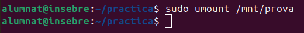
Part 3. Formateig d'alt nivell
3.1 Tornar a formatar (sense esborrar el contingut)
mkfs.ext4 -E nodiscard disc.imgEscriu y quan mkfs demani confirmació.
3.2 Comprovar què hi ha al disc
sudo mount -o loop disc.img /mnt/prova
ls -l /mnt/prova
sudo umount /mnt/prova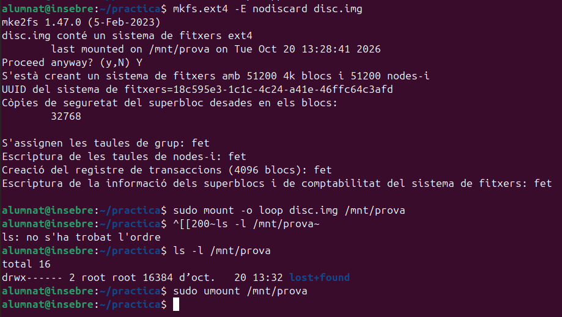
Resultat esperat: només lost+found.
Part 4. Recuperar els fitxers
4.1 Executar photorec
photorec /d recup /cmd disc.img
options,fileopt,everything,enable,search4.2 Veure què ha trobat
ls recup.1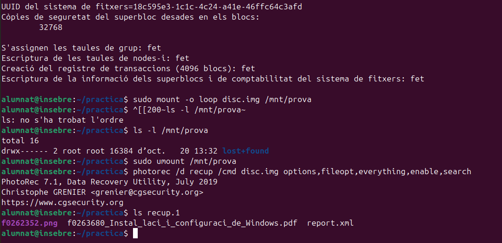
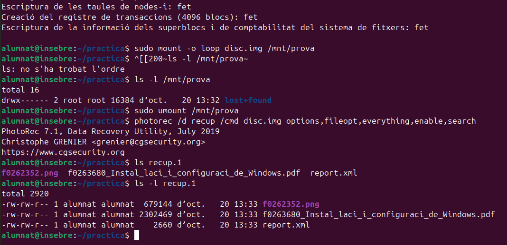
4.3 Comprovar que són idèntics
sha256sum recup.1/*
cat originals.sha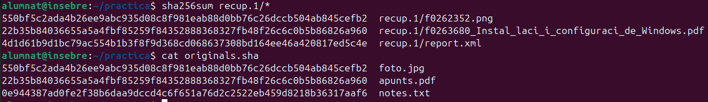
4.4 Buscar el text de notes.txt
strings -e S disc.img | grep pizza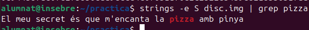
Part 5. Esborrat de baix nivell
5.1 Omplir el disc de zeros
dd if=/dev/zero of=disc.img bs=1M count=200 conv=notrunc status=progress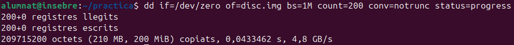
5.2 Tornar a intentar recuperar fitxers
photorec /d recup_zeros /cmd disc.img
options,fileopt,everything,enable,search
ls recup_zeros.15.3 Buscar el text un altre cop
strings -e S disc.img | grep pizza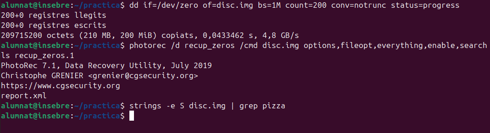
Neteja
cd ~/practica
rm -rf disc.img recup.1 recup_zeros.1 originals.sha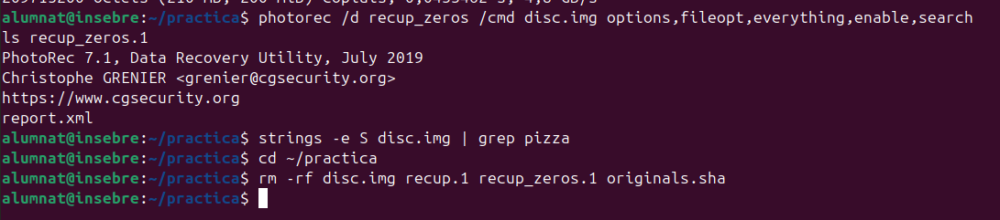
ls -l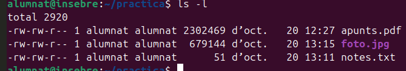